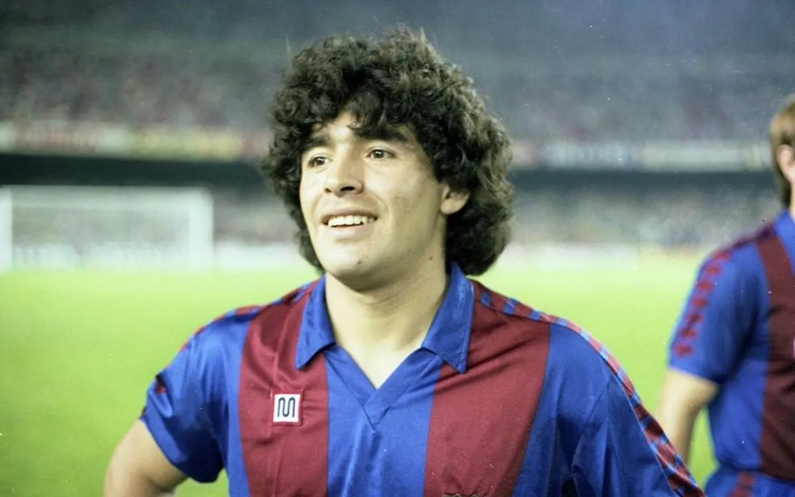
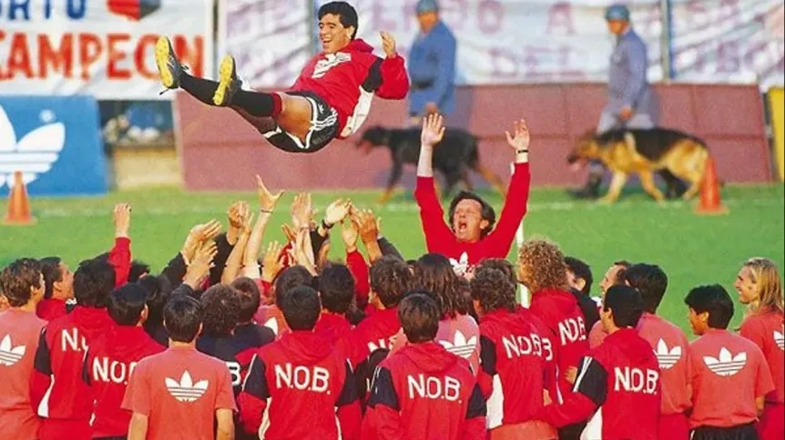
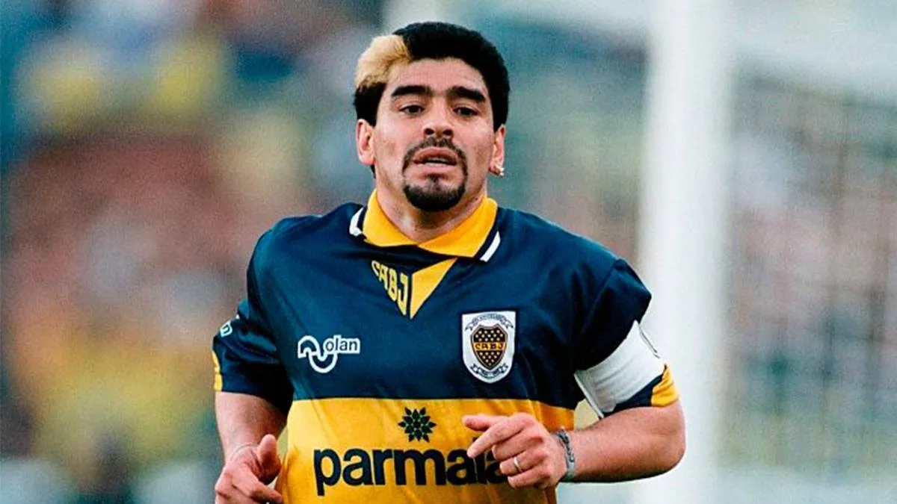

Diego Armando Maradona fue un jugador de fútbol y entrenador argentino. Como jugador, se desempeñó como mediocampista ofensivo o delantero, y es reconocido por numerosos especialistas, exfutbolistas y personalidades internacionales como «uno de los mejores futbolistas en la historia». Asimismo, ha sido catalogado por algunos medios como el «mejor jugador en la historia de la Copa Mundial», de la cual fue designado como el mejor jugador en su edición de 1986.
Criado en el barrio bonaerense de Villa Fiorito, fue fichado para las divisiones juveniles de Argentinos Juniors, donde pasó cinco temporadas obteniendo el récord de ser el máximo goleador del campeonato argentino cinco veces consecutivas. En 1981, fue traspasado a Boca Juniors, donde obtuvo el Campeonato Metropolitano, su único título en Argentina.
Tras su participación en la Copa Mundial de Fútbol, en la que la selección argentina se hospedó en Barcelona, se oficializó su venta al Fútbol Club Barcelona. El club pagó 1200 millones de pesetas por su pase, el 80% del dinero fue para Argentinos Juniors que era dueño de su pase y el resto para Boca Juniors, que había recurrido a la justicia, para que desistiera de su accionar y se pudiese hacer el pase al exterior de la Argentina una cifra importante para la época.

Finalmente, el 29 de junio de 1984, se confirmó el pase de Maradona al Nápoles por 1.3 millones de pesetas (8 millones de euros) y cuatro años de contrato. Al regresar del Mundial en México, Maradona inició una excelente temporada con el Napoli. Tras el histórico tercer puesto conseguido la temporada anterior, el equipo se había motivado para superarse, sumado a los fichajes de Di Napoli y del goleador Andrea Carnevale. En esa temporada consiguieron el primer scudetto de la historia de la institución, y además ganaron la Copa de Italia. La combinación Scudetto/Copa Italia (doblete) fue un logro que solo habían podido conseguir hasta ese momento el Torino, la Juventus y el Inter, todos clubes del norte de Italia, que mantienen una sorda e histórica disputa con los del sur. Maradona convirtió diez goles en el torneo y fue el máximo goleador del título, que significaría su paso a la inmortalidad de la institución napolitana.
Sin embargo, el logro más importante llegaría en el plano internacional, al conseguir el primer título internacional del club: la Copa UEFA.
Diego Maradona disputó cuatro mundiales en su carrera: España 1982, México 1986, Italia 1990 y Estados Unidos 1994, aunque de este último fue expulsado por dar positivo en un control antidoping. De todos ellos, el '10' ganó uno, el de 1986, una de las Copas del Mundo más recordadas de todos los tiempos.
El 1 de julio de 1992 vencía la suspensión de 15 meses impuesta por la FIFA y su pase estaba todavía en poder del Nápoles, club que buscaba su reincorporación al plantel. Pero Maradona quería alejarse de Italia y jugar para un club que no tuviera grandes exigencias deportivas.98 Las primeras conversaciones para su traspaso fueron con el Sevilla y el Olympique de Marsella, inclinándose finalmente por el primero, quien pagó la suma de 5,70 millones de euros por el pase cuya gran parte la pagó la actual empresa Mediaset de Silvio Berlusconi. Sin embargo ante la negativa del Nápoles de autorizar su traspaso, se pidió la intervención de la FIFA para destrabar el conflicto, lo que ocurrió el 22 de septiembre de 1992.
En 1993 se produjo su vuelta al fútbol argentino, esta vez con la camiseta de Newell's Old Boys. Pero en un principio las negociaciones estaban encaminadas para su regreso a Argentinos Juniors, hasta que se produjo un episodio que arruinaría la negociación y determinaría su incorporación a Newell's: fue amenazado por un grupo de barras bravas del "Bicho" que exigían la entrega de 50 000 dólares.A su vez, San Lorenzo de Almagro estuvo a punto de contratarlo a través de su amigo, Oscar Ruggeri, quien formaba parte en aquel entonces del club. Sin embargo, las diferencias con el presidente Fernando Miele hicieron que la negociación se cayera a último momento.


Tras estar los primeros meses de 1994 sin club, y sancionado durante toda la temporada 1994-95, el sueño de Maradona para su vuelta al fútbol era ser técnico y jugador de Boca Juniors, pero existían dos problemas importantes; el primero era que en ese entonces la conducción técnica estaba nuevamente a cargo de Silvio Marzolini, y la dirigencia no tenía interés en despedirlo. El segundo era económico, la situación financiera en la que se encontraba el club no permitía el pago de las sumas a las que él estaba acostumbrado. El primero fue solucionado por iniciativa de Maradona, ya que desistió de convertirse en técnico, y el segundo por iniciativa de varios empresarios dispuestos a aportar dinero, entre los que se encontraba Eduardo Eurnekian.
.jpg)
.jpg)
.jpg)

.jpg)